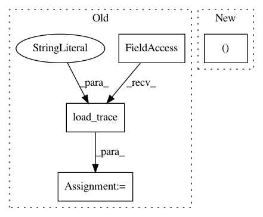

7d2c3d2761718f84016126aee49e8616346bbd2c,examples/posteriorplot.py,,,#,9
Before Change
az.style.use("arviz-darkgrid")
trace = az.utils.load_trace("data/non_centered_eight_trace.gzip")
az.posteriorplot(trace, varnames=["theta__0", "theta__1", "tau", "mu"])
After Change
non_centered = az.load_arviz_data("non_centered_eight")
az.posteriorplot(non_centered, var_names=("theta_tilde",), ref_val=0, rope=(-1, 1), textsize=11)
In pattern: SUPERPATTERN
Frequency: 3
Non-data size: 4
Instances
Project Name: arviz-devs/arviz
Commit Name: 7d2c3d2761718f84016126aee49e8616346bbd2c
Time: 2018-07-31
Author: ColCarroll@users.noreply.github.com
File Name: examples/posteriorplot.py
Class Name:
Method Name:
Project Name: arviz-devs/arviz
Commit Name: 4fb00229644a14226db9028e63e8caba9a0158f2
Time: 2018-07-08
Author: ColCarroll@users.noreply.github.com
File Name: examples/forestplot.py
Class Name:
Method Name:
Project Name: arviz-devs/arviz
Commit Name: a07276c70c42e7f9a2aed2fd81f825032dc92af5
Time: 2018-07-17
Author: ColCarroll@users.noreply.github.com
File Name: examples/jointplot.py
Class Name:
Method Name: